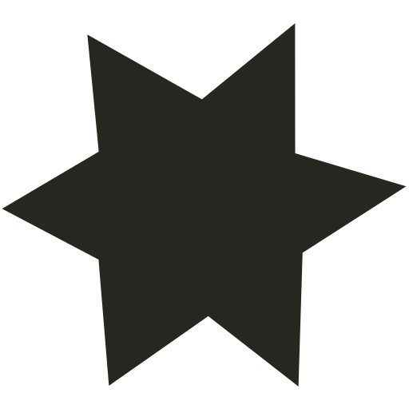

Game Design
Spring 2025
SCHISM
schism · noun
A formal division or split between people within an organization or movement.
Built together
Cooperation is the mechanic.
Two players cross the same level, but collide with opposite colors. A route that works for one can be an obstacle for the other. Swap boxes and chess pieces change the board; progress depends on thinking together.

Kiki · Black player
A D Move W Jump S Interact
Bouba · White player
← → Move ↑ Jump ↓ Interact
Keyboard or touch controls.
On mobile, use the left pad for Kiki and the right pad for Bouba. Up jumps; down interacts. Restart level (or R) resets the current puzzle. Choose “Play side by side” for landscape with one player at each end.
Sean Ryan + Ben Antinozzi + Kyle Setzer
CSC 281: Interactive Game Design · NC State
Godot / GDScript
Watch / The ending
Summer 2023
First steps in Unity
Some fun GIFs from exploring a game engine for the first time.